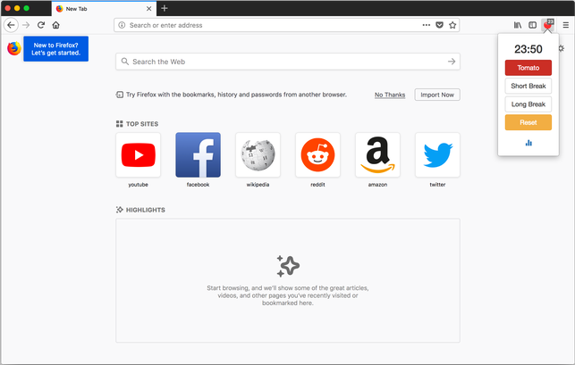
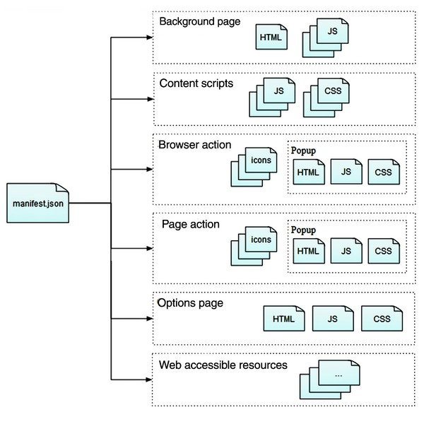
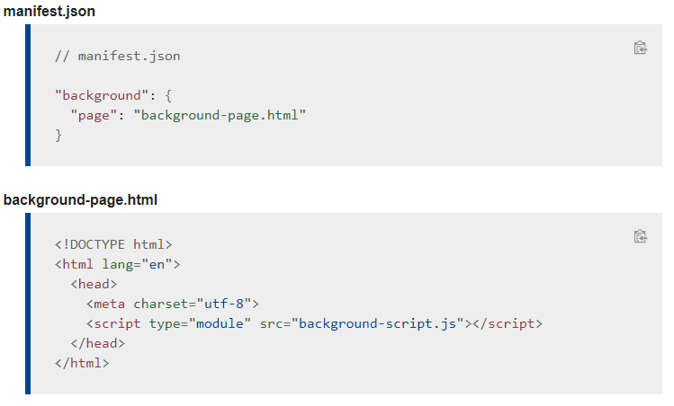
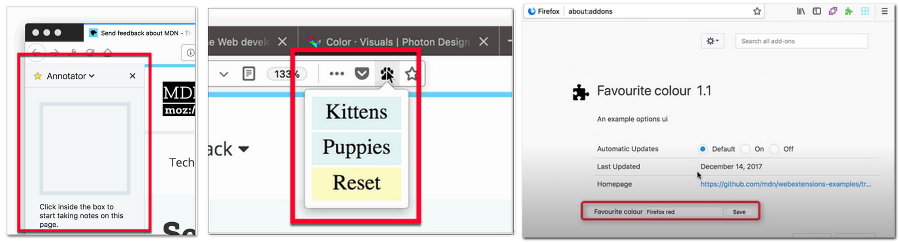
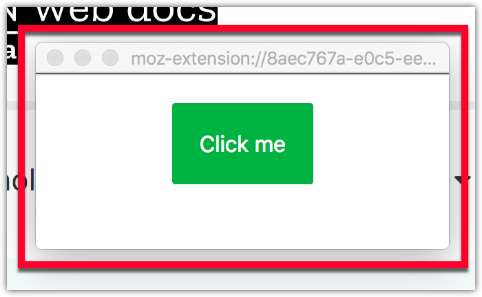

# What is browser Extensions <p>Firmware that expands (complements) the functionality of the browser</p> A paragraph with some text and a [link](http://hakim.se). --- ### What Extensions can do:  --- ## Slide 3 <pre><code data-trim data-noescape> (def lazy-fib (concat [0 1] ((fn rfib [a b] (lazy-cons (+ a b) (rfib b (+ a b)))) 0 1))) </code> </pre>
## What Extensions can do: --- ### Show users their personality --- ### Add or remove content from web pages --- ### Add tools and new browsing features --- ### Add development tools
## Anatomy of an extension <p>An extension consists of a collection of files, packaged for distribution and installation</p> --- ### manifest.json <p>This is the only file that must be present in every extension.</p>  --- ### Background scripts <p>Extensions often need to maintain long-term state or perform long-term operations independently of the lifetime of any particular web page or browser window. That is what background scripts are for.</p> <pre><code data-trim data-noescape> // manifest.json "background": { "scripts": ["background-script.js"] } </code> </pre> --- <p>Instead of specifying background scripts, you can specify a background page which has the added advantage of supporting ES6 modules:</p>  --- ### [Sidebars](https://developer.mozilla.org/en-US/docs/Mozilla/Add-ons/WebExtensions/user_interface/Sidebars), [Popups](https://developer.mozilla.org/en-US/docs/Mozilla/Add-ons/WebExtensions/user_interface/Popups), and [Options pages](https://developer.mozilla.org/en-US/docs/Mozilla/Add-ons/WebExtensions/user_interface/Popups)  --- ### Extension pages See [Extension pages](https://developer.mozilla.org/en-US/docs/Mozilla/Add-ons/WebExtensions/user_interface/Extension_pages) to learn more. <p>You can also include HTML documents in your extension which are not attached to some predefined user interface component.</p>  --- ### Add development tools
## Anatomy of an extension <p>An extension consists of a collection of files, packaged for distribution and installation</p> --- ### manifest.json <p>This is the only file that must be present in every extension.</p> --- ### Background scripts <p>Extensions often need to maintain long-term state or perform long-term operations independently of the lifetime of any particular web page or browser window. That is what background scripts are for.</p> <pre><code data-trim data-noescape> // manifest.json "background": { "scripts": ["background-script.js"] } </code> </pre> --- <p>Instead of specifying background scripts, you can specify a background page which has the added advantage of supporting ES6 modules:</p> --- ### [Sidebars](https://developer.mozilla.org/en-US/docs/Mozilla/Add-ons/WebExtensions/user_interface/Sidebars), [Popups](https://developer.mozilla.org/en-US/docs/Mozilla/Add-ons/WebExtensions/user_interface/Popups), and [Options pages](https://developer.mozilla.org/en-US/docs/Mozilla/Add-ons/WebExtensions/user_interface/Popups) --- ### Extension pages See [Extension pages](https://developer.mozilla.org/en-US/docs/Mozilla/Add-ons/WebExtensions/user_interface/Extension_pages) to learn more. <p>You can also include HTML documents in your extension which are not attached to some predefined user interface component.</p> --- ### Add development tools